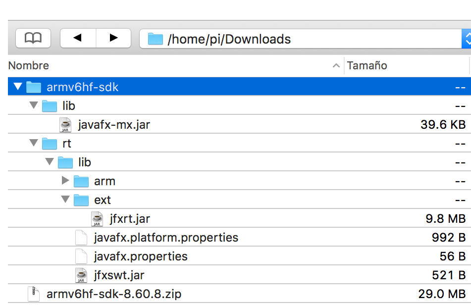

【1】树莓派原始镜像烧录。
【2】中文字库以及中文拼音输入法下载：
启动后，开启Terminal终端，出现提示符时输入：
1 | sudo apt-get install ttf-wqy-zenhei |
将安装文泉驿的开源中文字体，在这里向文泉驿表示致敬，貌似它是唯一一个开源的中文字体库。郭嘉有钱建孔子学院，但是从来不会有钱搞一套比较完整的开源中文字库出来的。
中文是可以显示啦，输入呢？Linux下早就有啦，叫SCIM（Smart Common Input Method ），所以只要输入：
1 | sudo apt-get install scim-pinyin |
就会安装拼音输入法，安装完成后，可以直接打入scim激活，下次启动是会自动启动的。快捷键也是Ctrl+空格。或者直接点击右下角图标选择。
接着运行：
1 | sudo raspi-config |
然后选择change_locale，在Default locale for the system environment:中选择zh_CN.UTF-8。然后重启机器，就发现整个环境变成中文的了。
【3】安装 Pi4j：
Installation
Easy/Preferred
(NOTE: This installation method requires that your RaspberryPi is connected to the Internet.)
The simplest method to install Pi4J on your RaspberryPi is to execute the following command directly on your RaspberryPi.
1 | curl -s get.pi4j.com | sudo bash |
This method will download and launch an installation script that perform the following steps:
- adds the Pi4J APT repository to the local APT repositories
- downloads and installs the Pi4J GPG public key for signature validation
- invokes the ‘apt-get update’ command on the Pi4J APT repository to update the local package database
- invokes the ‘apt-get install pi4j’ command to perform the download and installation
Offline/Manual
If you prefer/need to install Pi4J on a RaspberryPi device without an Internet connection, the following instructions provide the steps necessary to install Pi4J without requiring an Internet connection.
First, download a copy of the latest Pi4J Debian/Raspian installer package (.deb) file to your local computer. You can download the Pi4J Debian/Raspian installer package (.deb) using your web browser at the following URL:
http://get.pi4j.com/download/pi4j-1.2-SNAPSHOT.deb
Next, you will need to transfer the download installer package over to your RaspberryPi. You can use any method you prefer to transfer the file (USB, SCP, FTP, etc.)
(NOTE: If you have a previous version of Pi4J installed, you will need to uninstall it first.)
Once the installer package is available on your RaspberryPi, use the following command on the Pi to perform the installation:
1 | sudo dpkg -i pi4j-1.2-SNAPSHOT.deb |
Upgrade
Easy/Preferred
If you originally installed Pi4J using the ‘easy’ method, then Pi4J upgrades will be available anytime you perform a system update using ‘sudo apt-get update’ and ‘sudo update-get upgrade’.
If you wish to force an upgrade of the Pi4J package only, you can do so by executing the following command:
1 | sudo apt-get install pi4j or pi4j --update |
Offline/Manual
If you originally installed Pi4J using the ‘offline’ method, then you will need to manually uninstall the Pi4J package and download, transfer, and install the new version package using the ‘offline’ uninstall and installation methods described here on this page.
Uninstall
Easy/Preferred
If you originally installed Pi4J using the ‘easy’ method, then you can uninstall Pi4J simply by executing the following command on your RaspberryPi.
1 | sudo apt-get remove pi4j or pi4j --uninstall |
Complete/Full Removal
If you originally installed Pi4J using the ‘easy’ method and you want to remove all traces of Pi4J, including the Pi4J repository in the APT repositories list and the Pi4J GPG signature, then simply execute the following command on your RaspberryPi.
1 | curl -s get.pi4j.com/uninstall | sudo bash |
Offline/Manual
If you originally installed Pi4J using the ‘offline’ method, then you will need to manually uninstall the Pi4J package by executing the following command on your Raspberry Pi:
1 | sudo dpkg -r pi4j |
Installed Location / Example Files
This will install the Pi4J libraries and example source files to:
1 | /opt/pi4j/lib |
When attempting to compile a Java program using the Pi4J libraries, make sure to include the Pi4J lib folder in the classpath:
1 | javac -classpath .:classes:/opt/pi4j/lib/'*' ... |
When attempting to start a Java program using the Pi4J libraries, make sure to include the Pi4J lib folder in the classpath:
1 | sudo java -classpath .:classes:/opt/pi4j/lib/'*' ... |
If you would like to explore the examples, you can compile all the examples with the following commands:
1 | /opt/pi4j/examples/build |
Pi4j官网:https://pi4j.com
【4】安装 JavaFX 插件包：
As you can read here, the most recent JDK versions for ARM don’t include JavaFX.
If you want to use JavaFX in your Raspberry Pi, the solution is adding the missing JavaFX SDK.
If you install the recent Oracle’s JDK for ARM from here (select jdk-8u111-linux-arm32-vfp-hflt.tar.gz), then you will need to download the JavaFX SDK from Gluon’s site (select JavaFX Embedded SDK for armv6 hard float).
Once you have the file, unzip it, and copy the folders to your JDK.
Assuming you have downloaded armv6hf-sdk-8.60.8.zip to your Pi/Downloads folder, and you have unzip it to a folder armv6hf-sdk, like in the following picture:

using the following commands will allow you moving from command line the files to the JDK required folders. You can use a graphic tool for this as well.
1 | cd Downloads |
After that you should be able to run Java/JavaFX programs.
【5】解决树莓派图形渲染问题：
You can try increase the available raspberry pi video memory using the sudo raspi-config tool. try change to the 50/50 memory spit.
参考链接:https://www.raspberrypi.org/forums/viewtopic.php?f=81&t=60024#p448200
【6】树莓派播放视频：
WebView and Media were never part of the JavaFX ARM distribution, but Gluon recently added it to the embedded SDK that can be downloaded from here and installed with a recent JDK for ARM, available here.
Media requires a few extra steps as it depends in the native drivers that usually are not fully installed on a regular Jessie distribution.
First install these drivers:
1 | sudo apt-get install gstreamer0.10-plugins-good |
Now edit /etc/apt/sources.list and add at the end:
1 | deb http://ftp.uk.debian.org/debian/ wheezy main deb-src http://ftp.uk.debian.org/debian/ wheezy main |
Save the file (Ctrl+O, Ctrl+X).
Finally update and install the drivers:
1 | sudo apt-get update |
Now you can try to run again your JavaFX application.
If you find again the same exception (MediaException: UNKNOWN), check if it shows this message: Error in GstPipelineFactory, notice the driver that is missing, and try to install it.
参考链接:https://stackoverflow.com/questions/42076680/play-a-video-using-javafx-on-raspberry-pi
【7】常用的设置树莓派自启动的方法：
这个方式不用修改 rc.local 文件。机制上类似于 Windows 的“开始”菜单中的“启动”菜单。方法如下：
在 /home/pi/.config 下创建一个文件夹，名称为 autostart，并在该文件夹下创建一个xxx.desktop文件（文件名以.desktop结尾，前面可以自定义），文件内容如下：
1 | [Desktop Entry] |
以上 Name、Comment、Icon 可以自定，分别表示这个启动项目的名称、备注以及显示的图标。Exec 表示调用的指令，和在终端输入运行脚本的指令格式一致。
参考链接：https://www.jianshu.com/p/1a160067d8fd
【8】用树莓派播放视频：
树莓派上可以播放 H264 和 mp4 等视频格式，1080p也没问题，因为这种格式的文件有硬件加速。
首先安装 安装 omxplayer ，这是一个命令行的播放器：
1 | sudo apt-get install omxplayer |
然后就可以播放了，当然需要通过 HDMI 连接到显示器看：
1 | omxplayer -o hdmi /path/to/filename.mp4 |
-o hdmi 表示音频直接通过 HDMI 播放，播放时按左右箭头快进、按 q 退出。
更多命令行选项和播放时的控制快捷键请参考 omxplayer 的文档。
【9】树莓派安装 JDK：
首先是安装JDK
1 | sudo apt-get install oracle-java8-jdk |
也可以在这个地方下载
修改环境变量，我用的版本是JDK8，arm版HFLT，代表arm架构硬件浮点运算，放在/usr/lib/jvm/jdk-8-oracle-arm-vfp-hflt这个文件夹了
1 | sudo nano /etc/profile |
1 | [cc lang="php"] |
接下来是重启树莓派，看看版本号：
1 | java -version |
【10】树莓派去黑边：
在使用树莓派连接HDMI电脑显示器的时候，可能会出现屏幕显示不全，有黑边的情况。这时候需要调节分辨率以适应屏幕。
进入树莓派系统，输入以下指令设置config.txt文件：
1 | sudo vi /boot/config.txt |
调节任何参数时，将#号去除即可生效
1 | uncomment to force a specific HDMI mode (this will force VGA) |
如果显示器不是1080P。则可以参考注1参数修改
这时候就将显示设置成1080P的分辨率，但是是不带声音的，如果你的显示器支持HDMI声音输出或者自带音响，则将如下代码参数去除#号解锁强制获取声音。
1 | uncomment to force a HDMI mode rather than DVI. This can make audio work in # DMT (computer monitor) |
更多设置参考官方配置文档：https://www.raspberrypi.org/documentation/configuration/config-txt.md
注1： DMT模式分辨率参数
| hdmi_mode | resolution | frequency | notes |
|---|---|---|---|
| 1 | 640x350 | 85Hz | |
| 2 | 640x400 | 85Hz | |
| 3 | 720x400 | 85Hz | |
| 4 | 640x480 | 60Hz | |
| 5 | 640x480 | 72Hz | |
| 6 | 640x480 | 75Hz | |
| 7 | 640x480 | 85Hz | |
| 8 | 800x600 | 56Hz | |
| 9 | 800x600 | 60Hz | |
| 10 | 800x600 | 72Hz | |
| 11 | 800x600 | 75Hz | |
| 12 | 800x600 | 85Hz | |
| 13 | 800x600 | 120Hz | |
| 14 | 848x480 | 60Hz | |
| 15 | 1024x768 | 43Hz | incompatible with the Raspberry Pi |
| 16 | 1024x768 | 60Hz | |
| 17 | 1024x768 | 70Hz | |
| 18 | 1024x768 | 75Hz | |
| 19 | 1024x768 | 85Hz | |
| 20 | 1024x768 | 120Hz | |
| 21 | 1152x864 | 75Hz | |
| 22 | 1280x768 | reduced blanking | |
| 23 | 1280x768 | 60Hz | |
| 24 | 1280x768 | 75Hz | |
| 25 | 1280x768 | 85Hz | |
| 26 | 1280x768 | 120Hz | reduced blanking |
| 27 | 1280x800 | reduced blanking | |
| 28 | 1280x800 | 60Hz | |
| 29 | 1280x800 | 75Hz | |
| 30 | 1280x800 | 85Hz | |
| 31 | 1280x800 | 120Hz | reduced blanking |
| 32 | 1280x960 | 60Hz | |
| 33 | 1280x960 | 85Hz | |
| 34 | 1280x960 | 120Hz | reduced blanking |
| 35 | 1280x1024 | 60Hz | |
| 36 | 1280x1024 | 75Hz | |
| 37 | 1280x1024 | 85Hz | |
| 38 | 1280x1024 | 120Hz | reduced blanking |
| 39 | 1360x768 | 60Hz | |
| 40 | 1360x768 | 120Hz | reduced blanking |
| 41 | 1400x1050 | reduced blanking | |
| 42 | 1400x1050 | 60Hz | |
| 43 | 1400x1050 | 75Hz | |
| 44 | 1400x1050 | 85Hz | |
| 45 | 1400x1050 | 120Hz | reduced blanking |
| 46 | 1440x900 | reduced blanking | |
| 47 | 1440x900 | 60Hz | |
| 48 | 1440x900 | 75Hz | |
| 49 | 1440x900 | 85Hz | |
| 50 | 1440x900 | 120Hz | reduced blanking |
| 51 | 1600x1200 | 60Hz | |
| 52 | 1600x1200 | 65Hz | |
| 53 | 1600x1200 | 70Hz | |
| 54 | 1600x1200 | 75Hz | |
| 55 | 1600x1200 | 85Hz | |
| 56 | 1600x1200 | 120Hz | reduced blanking |
| 57 | 1680x1050 | reduced blanking | |
| 58 | 1680x1050 | 60Hz | |
| 59 | 1680x1050 | 75Hz | |
| 60 | 1680x1050 | 85Hz | |
| 61 | 1680x1050 | 120Hz | reduced blanking |
| 62 | 1792x1344 | 60Hz | |
| 63 | 1792x1344 | 75Hz | |
| 64 | 1792x1344 | 120Hz | reduced blanking |
| 65 | 1856x1392 | 60Hz | |
| 66 | 1856x1392 | 75Hz | |
| 67 | 1856x1392 | 120Hz | reduced blanking |
| 68 | 1920x1200 | reduced blanking | |
| 69 | 1920x1200 | 60Hz | |
| 70 | 1920x1200 | 75Hz | |
| 71 | 1920x1200 | 85Hz | |
| 72 | 1920x1200 | 120Hz | reduced blanking |
| 73 | 1920x1440 | 60Hz | |
| 74 | 1920x1440 | 75Hz | |
| 75 | 1920x1440 | 120Hz | reduced blanking |
| 76 | 2560x1600 | reduced blanking | |
| 77 | 2560x1600 | 60Hz | |
| 78 | 2560x1600 | 75Hz | |
| 79 | 2560x1600 | 85Hz | |
| 80 | 2560x1600 | 120Hz | reduced blanking |
| 81 | 1366x768 | 60Hz | |
| 82 | 1920x1080 | 60Hz | 1080p |
| 83 | 1600x900 | reduced blanking | |
| 84 | 2048x1152 | reduced blanking | |
| 85 | 1280x720 | 60Hz | 720p |
| 86 | 1366x768 | reduced blanking |
【11】OmxPlayer 调节声音大小：
to provide more precise information for playing through scripts, there are 3 ways to change sound volume in current version of omxplayer, and values are not so intuitive:
- on starting command line, param –vol YYY, double millibels, default 0, range [-6000:0]
- by stdin interface, sending +/- to omxplayer will increase/decrease volume for 300 dmbels
- with DBUS interface, cmd ‘set volume’, value double:XXX, default 1, range [0:1]
xxx to yyy relation is: XXX = 10 ^ (YYY / 2000) … according to omxplayer.cpp source code, reverse formula would be: YYY = 2000 * (log XXX).
so if we need:
- volume 1%, XXX=0.01 and YYY=-4000 (10^(-4000/2000)=10^-2=0.01
- volume 10%, XXX=0.1 and YYY=-2000 (10^(-2000/2000)=10^-1=0.1
- volume 50%, XXX=0.5 and YYY=-602 (10^(-602/2000))~=0.5
- volume 100%, XXX=1 and YYY=0 (10^(0/2000)=10^0=1)
- volume 150%, XXX=1.5 and YYY=352 … (for boost test, normal values are <=100%)
working bash script for dbus volume command:
1 | export DBUS_SESSION_BUS_ADDRESS=$(cat /tmp/omxplayerdbus.${USER:-root}) \ |
equals to volume parameter at startup:
1 | omxplayer --vol -602 mediaFileName.mp4 |
… both sets sound volume to 50%.
【12】树莓派设置不休眠的方法
树莓派长时间没人操作时，会自动进入休眠状态，这是因为长时间无操作触发linux的节电休眠机制。所以当树莓派运行后台程序，比如用树莓派看视频时，时间一长就会自动黑屏，树莓派自动进入休眠状态。
怎么设置树莓派不休眠，其实通过建立和设置内置文件就行了，很简单。
以下是防止树莓派休眠的设置步骤：
1、用管理员root账户登录树莓派，在文件夹/etc/profile.d/里面新建内置文件screen.sh。
2、编辑文件screen.sh，写入以下两行内容:
1 | xset dpms 0 0 0 |
保存文件。
3、重启树莓派，就能实现永久禁用树莓派休眠。
【13】树莓派中的GPU渲染内存设置
为了平衡树莓派CPU运行内存和GPU渲染内存，将GPU的MemorySplit设置成320M这个经验值（总内存1GB，GPU分得320M，则CPU持有704M）是一个不错的选择，设置方法如下：
raspi-config>>Advanced Options>>Memory Split>>更改内存为320